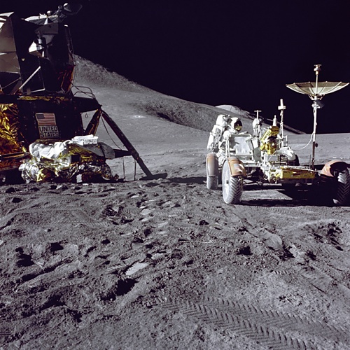
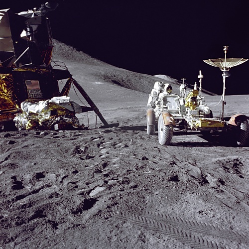
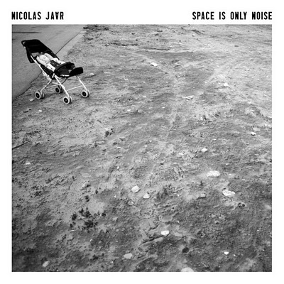
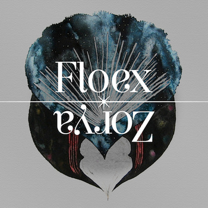
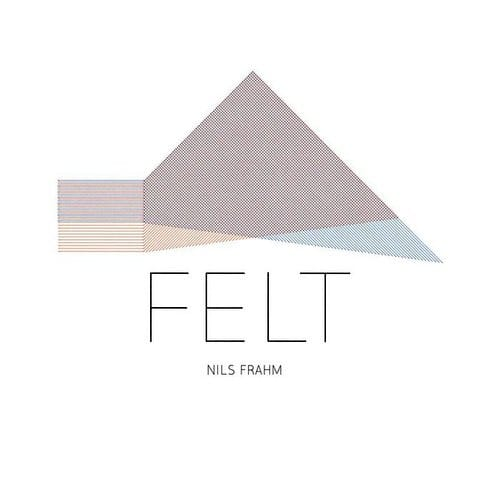

Apolo 17

Цветные фотки c луны. via.

Цветные фотки c луны. via.
Хорошее кино.

Очень приятное кино! Рекомендую смотреть с оригинальной дорожкой.

Очень кайфовый чувак!
А у кого-то уже будущее за окном.
Хоть родился я в рубашке,
Рубашка эта – не для глажки!
След простыл, покрылся серой пылью,
Нет, не родился я, чтоб сказку сделать былью.
Какой охуенный Ван Гог! via

Очень приятный фьюче джаз / айдиэм из Чехии. Инфа о пластинке на discogs.
Купить Вакомовский стилус для айПада и эту прогу и можно будет забыть о всяких там дигитайзерах! Супер!

Очень приятный альбом.